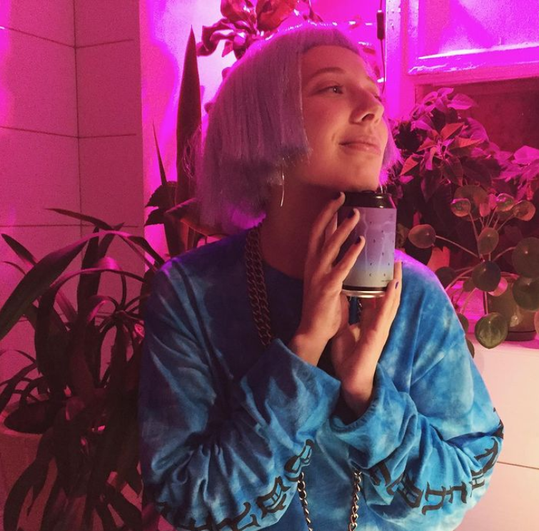
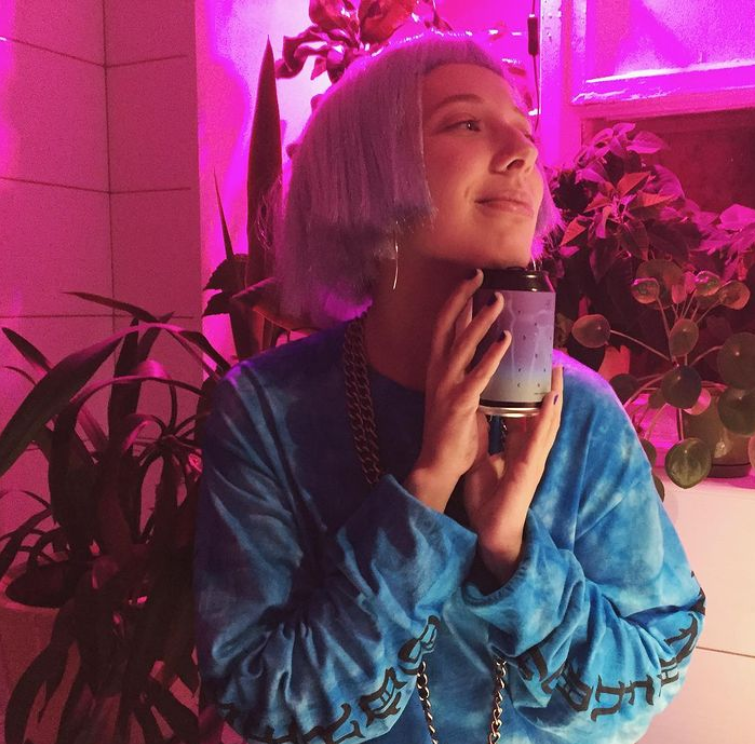

Rheubarbarum cult


“Rheubarbarum cult” - крепленый (ABV-8%) гозе с сезонным ревенем в закладке 100 гр. на литр,
охмеленный
немецкими hallertau и сваренный по технологии sour kettle.
Презентация состоялась 17 октябр в Share House Bar в Москве
 

Hiroshima shadow
“Hiroshima shadow” - hazy ipa с уклоном в японский стиль.
Сорт сварен на Sorachi Ace и удивительном Azacca, ABV 6%. Также добавили немного риса в рамках
эксперимента.
Пиво было презентовано в Beer Diet 12 декабря.